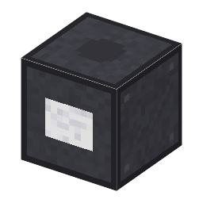

説明
①子ども 白く明るい LED の明かり。少しの電気でとても明るい。
②学生 電気 2W で光る（明るさ15）。白色 LED 4個＋ガラス4＋銅ケーブル（作業台）。
③大人 電気の多くを光にするので、同じ明るさなら電球のずっと少ない電気でよい。
④ガチ 1996年の白色 LED は暗かったが、効率が上がって2010年代に家の明かりの主役になった。
作り方
使い道
（このアイテムを使うレシピは無い）

①子ども 白く明るい LED の明かり。少しの電気でとても明るい。
②学生 電気 2W で光る（明るさ15）。白色 LED 4個＋ガラス4＋銅ケーブル（作業台）。
③大人 電気の多くを光にするので、同じ明るさなら電球のずっと少ない電気でよい。
④ガチ 1996年の白色 LED は暗かったが、効率が上がって2010年代に家の明かりの主役になった。
（このアイテムを使うレシピは無い）